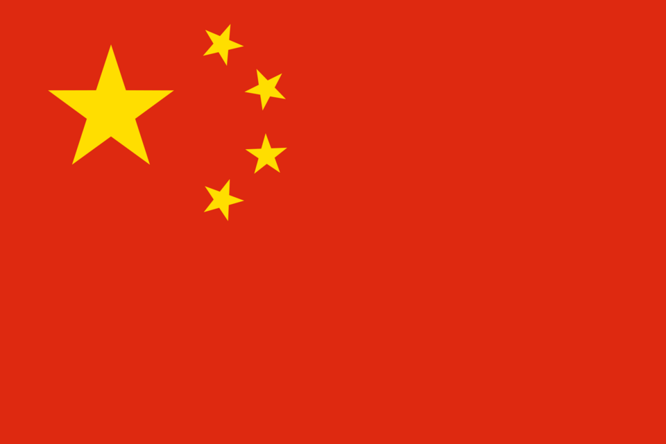

Китай
Карта Китая
Кита́й (кит. трад. 中國, упр. 中国, пиньинь Zhōngguó, палл. Чжунго), официальное название — Кита́йская Наро́дная Респу́блика, сокращённо — КНР (кит. трад. 中華人民共和國, упр. 中华人民共和国, пиньинь Zhōnghuá Rénmín Gònghéguó, палл. Чжунхуа Жэньминь Гунхэго) — государство в Восточной Азии.
С востока страна омывается водами западных морей Тихого океана.
На северо-востоке она граничит с КНДР и Россией, на севере — с Монголией, на северо-западе — с Россией и Казахстаном, на западе — с Кыргызстаном, Таджикистаном и Афганистаном, на юго-западе — с контролируемым Пакистаном Гилгит-Балтистаном, Индией, Непалом и Бутаном, на юге — с Мьянмой, Лаосом, Вьетнамом. Общая площадь территории составляет 9,6 млн км²[11]; занимает 4-е место в мире по территории среди государств мира по площади, уступая России, Канаде и США.